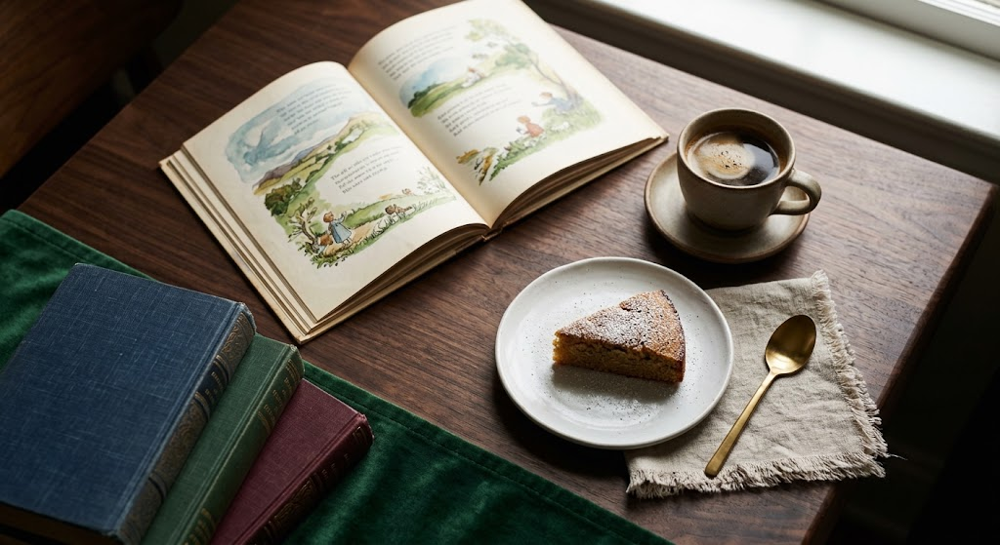
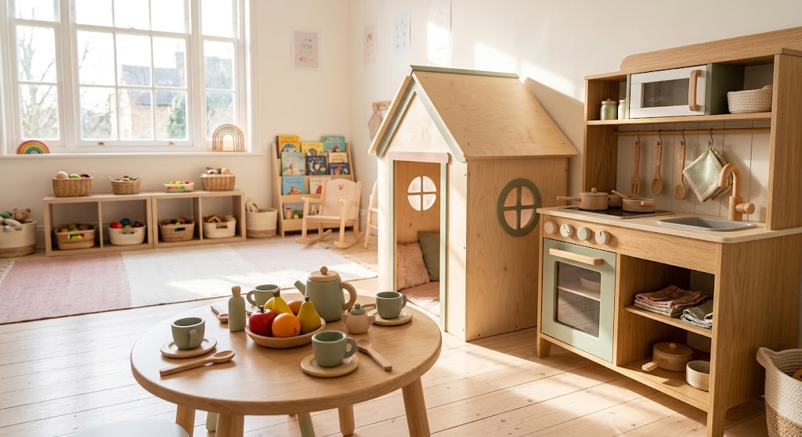

絵本を愛する人のための、
町の図書館。
剣淵町 絵本の館は、日本最大級の絵本関連図書館です。子ども向けの絵本はもちろん、大人がじっくり読める本も揃い、世代を問わず過ごせます。
原画展や絵本まつりなどのイベントも開かれ、絵本の世界をさまざまな形で味わえます。
約3万5千冊絵本の所蔵数
約1,000点絵本原画の所蔵数
本を楽しみ、
地域とつながる。
館内には、軽食やスイーツを楽しめるカフェを併設。このカフェは知的障害のある方の就労支援も取り入れて運営されており、地域の福祉にもつながっています。
- 絵本と原画の充実した所蔵日本最大級の絵本関連図書館
- 原画展・絵本まつりなどのイベント絵本の魅力を多彩に紹介
- 就労支援を取り入れた軽食喫茶お茶の時間が、地域を支える

絵本の里のはじまり
町民有志の想いから育った、剣淵の絵本文化。
-
剣淵商工会青年部が児童図書編集者と出会い、「けんぶち絵本の里を創ろう会」を設立。町民有志14名で活動が始まりました。
-
公民館を改修して絵本の原画や蔵書を集め、旧役場庁舎を活用した初代「絵本の館」がオープンしました。
-
施設の老朽化に伴い新築され、現在の「絵本の館」となりました。

ごっこはうすと、
カフェのひととき。
木製の家具を備えたままごと遊びの小部屋「ごっこはうす」では、子どもたちが思い思いにごっこ遊びを楽しめます。
本を選んだあとは、併設のカフェで軽食やスイーツを。お子さま連れでも過ごしやすい施設です。
ご来館の声
★★★★★
マンホールカードいただきました。えほんが沢山展示されてました。
★★★★★
マンホールカードをいただきたく訪問させていただきました。「絵本の館」という名称から子供向けの絵本がたくさんあるのかな..と思っていたのですが、子供だけでなく、大人向けの本、歴史、文学、文庫本、トラベル書等々メチャクチャ充実していました。
子供が遊べるスペースもある他、大人がゆっくり本を読めるスペース、そしてカフェまでありました。施設も凄く綺麗です。素晴らしいところです。思わず長居してしまいました。
マンホールカードもいただく事が出来ました。ありがとうございました。